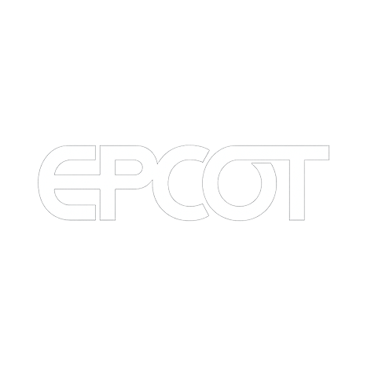
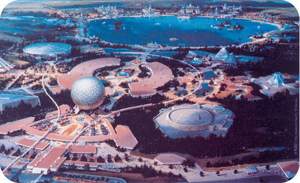
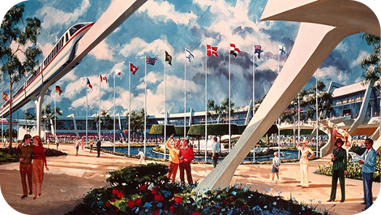
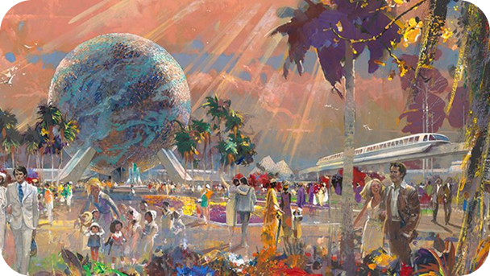
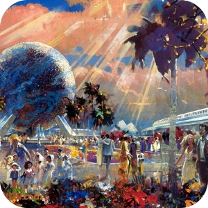

Opening Day
1982
From Dream to Reality: The Planning and Design of EPCOT
"EPCOT will always be in a state of becoming. It will never cease to be a living blueprint of the future" – Walt Disney
After Walt Disney passed away in December of 1966, the Walt Disney Company found itself at a crossroads. Walt had left behind a bold vision: a city of tomorrow that would serve as a living laboratory for innovation, efficiency, and urban harmony.
But without Walt's hands-on leadership, the company was hesitant to take on the responsibility of running a real city. So the question became:
How do you honor the spirit of Walt's EPCOT without building an actual city?
Introducing,
    In the early 1970s, a new idea began to take shape: EPCOT would become a theme park, not a residential city—but one unlike anything ever built. Rather than fantasy or fairy tales, this park would be rooted in reality: technology, science, industry, and global unity.
“We determined that no one company or organization could bring Walt’s concept to life in its original form. But we did feel we could build a new kind of theme park that would reflect his optimism, creativity, and belief in the future.” – Card Walker, CEO of Disney in the 1970s

Future World brought cutting-edge innovation to life, showcasing the power of computers, communication, and automation in shaping tomorrow.

From the mysteries of the universe to the wonders of biology, EPCOT invited guests to explore the forces that define our natural world.

EPCOT celebrated human ingenuity and progress, highlighting transportation, energy, and the role of enterprise in building the future.

World Showcase was a tribute to international harmony—offering a window into diverse cultures and a vision of a more connected world
TWO WORLDS IN ONE PARK
World Showcase:
Culture in Harmony
World Showcase: Culture in Harmony
On the opposite side of the park, World Showcase would circle a 40-acre lagoon, each pavilion offering an immersive cultural experience. The plan was for up to 20 countries, each represented through architecture, restaurants, and entertainment. In the end, 9 pavilions made it for opening day (Mexico, China, Germany, Italy, the American Adventure, Japan, France, the UK, and Canada), with Morocco and Norway to follow later.
Each country worked closely with Disney to ensure cultural accuracy. For example, Moroccan artisans were flown in to hand-carve tile mosaics and woodwork for their pavilion, while French chefs helped design menus and train culinary staff.
World Showcase wasn't just about tourism—it was about creating understanding through cultural exchange, something Walt believed deeply in during the Cold War era.
"If we can bring people together to understand each other, to celebrate each other's heritage, maybe we can bring the world a little closer together." – Marty Sklar, Disney Legend and Imagineer
Future World:
Designing Tomorrow
Future World: Designing Tomorrow
The Imagineers envisioned Future World as a gleaming land of pavilions, each one dedicated to a particular area of human progress—energy, transportation, communication, the land, the seas, and the imagination. Each pavilion would be sponsored by major corporations like General Motors, Exxon, and AT&T, who would fund their design in exchange for showcasing their innovations.
The park's entrance would be dominated by Spaceship Earth, a towering geodesic sphere that would serve as both EPCOT's icon and a ride chronicling the history of communication. As Imagineer John Hench explained, the sphere symbolized more than just architecture:
"Spaceship Earth is meant to remind us that we're all travelers on a shared journey through time. It's not just a structure—it's a message."
Designing Future World meant tackling complex challenges. Imagineers had to simulate undersea research facilities, futuristic farms, and renewable energy systems—all with the immersive detail Disney was known for. Engineers developed new ride systems, massive infrastructure (like underground service tunnels), and experimental materials to bring the vision to life.

EPCOT STATS
EPCOT Construction Stats (1979-1982)
- Project Name: EPCOT Center
- Location: Walt Disney World, Florida
- Construction Began: October 1, 1979
- Opening Day: October 1, 1982
Engineering & Build
- Over 10,000 workers involved
- Cost: $1.2 billion USD (largest private construction project at the time)
- Park Size: ~300 acres (2.5x Magic Kingdom)
- Total Build Time: ~3 years
Opening Day Features
- 2 lands: Future World & World Showcase
- 6 major pavilions in Future World
- 9 country pavilions in World Showcase
- Centerpiece: Spaceship Earth (180 ft geodesic sphere)
Infrastructure
- Over 1.3 miles of monorail track
- 80,000 solar cells on Universe of Energy
- Living greenhouses in The Land pavilion
- Over 50 interactive exhibits in CommuniCore